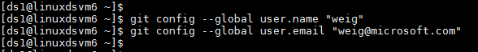

Project Lead
If you are leading a team for a data science project, or if you are the only data scientist working on a data science project, this instruction is for you.
After finishing this tutorial, you will:
- Create project repository in your team project on your group VSTS server
- Seed ProjectTemplate from TeamProjectTemplate
- Create project file share as a project resource (optional)
- Mount project file share to your DSVM (optional)
- Add project members and security control
Dictionary of names used in this instruction.
R3: The TeamProjectTemplate repository on Git that your team lead has set up on your VSTS group server.R4: The TeamUtilities repository on Git that your team lead has setup on your VSTS group server.R5: The Project repository on Git you are going to setup for your project on your VSTS group server.D3, D4, and D5: The local directories on your machine that you are going to clone R3, R4, and R5 to, respectively.
1. Prerequisites:
- Your team lead has set up the team project and two repositories TeamProjectTemplate (
R3) and TeamUtilities (R4) on your group VSTS server.
- You have been added to your team project with the privilege to create project repositories.
If any of these two steps has not been completed, please reach out to your team lead or his/her delegate to set it up by following the instructions.
- Git is installed on your machine. If you are using Data Science Virtual Machine, Git has been pre-installed and you are good to go. Otherwise, please refer to sections Install Git on Windows and Linux machine and Provision Data Science Virtual Machine in Tools.
- If you are using Windows machine, you need to have Git Credential Manager (GCM) installed on your machine. On the README.md, scroll down to section Download and Install, and click the latest installer. You will be directed to the latest installer page. Download the .exe installer and run it.
- If you are using Linux machine, create SSH public key on your DSVM and add it to your group VSTS server. For details about SSH, please refer to Create SSH public key section in Tools.
2. Create project repository (R5) under Team project MyTeam
-
Assuming that you have logged in to your group VSTS server at https://<VSTS Server Name>.visualstudio.com. Under Recent projects & teams, click Browse. A window will be popped up which lists all team projects on the VSTS server.

-
Click the team project name that you are going to create your project repository in. In this example, click MyTeam. Then, click Navigate. You will be directed to the home page of the team project MyTeam.

-
Click Collaborate on code, you will be directed to the git home page of your team project. Click the downward arrow at the top left corner, and select + New repository. Then, in the popup window, input a name for your project git repository. Make sure that you select Git as the type of the repository. In this example, we use the name DSProject1. Then, click Create. Your project git repository will be created.


3. Seed DSProject1 repository (R5) from your team project template repository (R3)
- Clone your team project template repository (R3) to a directory (D3) on your local machine.
On your local machine, create a directory C:\GitRepos\MyTeamCommon (Windows), or $home/GitRepos/MyTeamCommon (Linux), and change to that directory. Then, run the following command to clone your team project template repository to your local machine.
Windows
git clone <the HTTPS URL of the TeamProjectTemplate repository>
Typically, the HTTPS URL of your team project template repository is https://<VSTS Server Name>.visualstudio.com/<Your team project name>/_git/<Your team project template repository name>. In this example, we have https://mysamplegroup.visualstudio.com/MyTeam/_git/MyTeamProjectTemplate.

Linux
git clone <the SSH URL of the TeamProjectTemplate repository>

Typically, the SSH URL of the team project template repository is _ssh://<VSTS Server Name>@<VSTS Server Name>.visualstudio.com:22//_git/<Your team project template repository name>. In this example, we have ssh://mysamplegroup@mysamplegroup.visualstudio.com:22/MyTeam/_git/MyTeamProjectTemplate.
- Clone DSProject1 repository (R5) to a directory (D5) on your local machine
Change directory to GitRepos, and run the following command to clone your project repository to your local machine.
Windows
git clone <the HTTPS URL of the Project repository>

Linux
git clone <the SSH URL of the Project repository>

Typically, the SSH URL of the project repository is _ssh://<VSTS Server Name>@<VSTS Server Name>.visualstudio.com:22//_git/<Your project repository name>. In this example, we have ssh://mysamplegroup@mysamplegroup.visualstudio.com:22/MyTeam/_git/DSProject1.
- Copy contents in D3 to D5
Now in your local machine, you need to copy the content of D3 to D5, except the git metadata in .git directory. The following scripts will do the job. Make sure to type in the correct paths to the directories. Source folder is the one from your team (D3); destination folder is the one for your project (D5).
Windows
wget "https://raw.githubusercontent.com/Azure/Azure-MachineLearning-DataScience/master/Misc/TDSP/tdsp_local_copy_win.ps1" -outfile "tdsp_local_copy_win.ps1"
.\tdsp_local_copy_win.ps1 3

Now you can see in DSProject1 folder, all the files (excluding the .git) are copied from MyTeamProjectTemplate.

Linux
wget "https://raw.githubusercontent.com/Azure/Azure-MachineLearning-DataScience/master/Misc/TDSP/tdsp_local_copy_linux.sh"
bash tdsp_local_copy_linux.sh 3
Now you can see in DSProject1 folder, all the files (except the metadata in .git) are copied from MyTeamProjectTemplate.

-
Make changes to D5 if needed
If your project needs some specific directories or documents, other than the ones you get from your team project template (copied to your D5 directory in the previous step), you can customize the content of D5 now.
-
Add contents in D5 to R5 on your group VSTS server
You now need to push contents in DSProject1 to R5 repository in your team project on your group's VSTS server. Change to directory D5, and use the following git commands to add contents in D5 to R5, commit the change, and push. The commands are the same for both Windows and Linux systems.
git status
git add .
git commit -m"push from win DSVM"
git push
[Azure Note] If this is the first time you commit to a Git repository, you will be asked to provide your name and email address. Please use the same name and email address when you commit to these two repositories. Using the same name and email address will provide convenience when later on you build PowerBI dashboard to track your Git activities on multiple repositories.

4. Create and mount Azure file shares as project resources (Optional)
If you want to create Azure file shares to share data, such as the project raw data and the features generated for your project, so that all project members have access to the same datasets from multiple DSVMs, follow the detailed instructions in sections 4 and 5 of 2TeamLead.md.